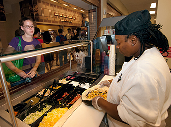

Dining in St. Louis
Just like any major city in America, St, Louis offers its residents with a unique dining experience. Enjoy Italian on The Hill or enjoy urban landscape at the many restaurants downtown. In this section, we will introduce you to some great places to eat, On and off-campus.
Dining Services provides students with many options to eat on campus. Chech out the website to get full depth of what they offer
St. Louis offers many cusines from different communities. Feeling Italian? Try a restaurant on The Hill. Asian? Try a place on Olive! The possiblities are (almost) endless